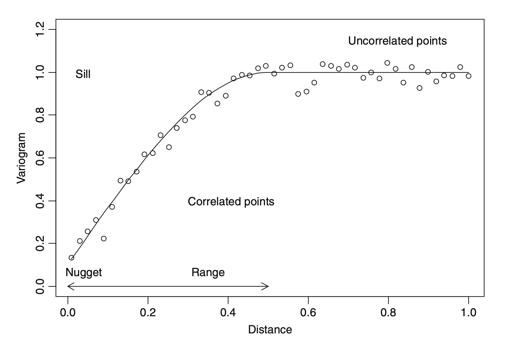

library(tidyverse)
library(nlme)
library(gstat)
library(sp)作业05：自相关的诊断与应对
复习第五讲内容，掌握时间自相关与空间自相关的诊断和建模方法
作业目标
本次作业对应第五讲 talk05.qmd，目标是：
- 回顾线性回归中误差项独立性假设及其统计含义。
- 学会使用残差图、
acf()和pacf()对时间自相关进行初步诊断。 - 学会在
gls()中通过correlation参数加入时间相关结构，并比较不同模型。 - 学会使用空间残差图与变异函数诊断空间自相关，并尝试构建空间相关结构。
预计完成时间：3-4 小时。
提交要求（必须遵守）
- 提交：
homework05.qmdhomework05.html- 渲染后生成的同名文件夹：
homework05_files
- 所有代码必须可运行，渲染后 HTML 不报错。
- 文末必须包含 AI 使用声明（按模板填写；未使用也要填写）。
- 报告完成本次作业花费的时间。
本次作业会用到的 R 包
Part 1：时间自相关诊断与应对
本部分使用 Hawaii数据集。该数据记录了夏威夷群岛某类海鸟数量与降雨量的逐年变化。
数据读取与初步整理
Hawaii <-
read_table("data/Hawaii.txt") |>
mutate(Birds = sqrt(Moorhen.Kauai)) |>
mutate(
Rainfall_type = if_else(
Rainfall > mean(Rainfall, na.rm = TRUE),
"High",
"Low"
),
Rainfall_type = factor(Rainfall_type)
) |>
select(Year, Birds, Rainfall, Rainfall_type)
Hawaii# A tibble: 48 × 4
Year Birds Rainfall Rainfall_type
<dbl> <dbl> <dbl> <fct>
1 1956 1.41 15.2 Low
2 1957 NA 15.5 Low
3 1958 1.41 16.3 Low
4 1959 3.16 21.2 High
5 1960 2 10.9 Low
6 1961 3.16 19.9 High
7 1962 3.46 12.6 Low
8 1963 3.16 20.1 High
9 1964 2.83 10.0 Low
10 1965 NA 30.9 High
# ℹ 38 more rows初始模型
先拟合一个不带相关结构的线性模型：
\[ Birds_i = \beta_0 + \beta_1 \text{Rainfall}_i + \beta_2 \text{Year}_i + \varepsilon_i \]
Hawaii_gls_m0 <-
gls(Birds ~ Rainfall + Year, data = Hawaii, na.action = na.omit)
summary(Hawaii_gls_m0)Generalized least squares fit by REML
Model: Birds ~ Rainfall + Year
Data: Hawaii
AIC BIC logLik
228.4798 235.4305 -110.2399
Coefficients:
Value Std.Error t-value p-value
(Intercept) -477.6634 56.41907 -8.466346 0.0000
Rainfall 0.0009 0.04989 0.017245 0.9863
Year 0.2450 0.02847 8.604858 0.0000
Correlation:
(Intr) Ranfll
Rainfall -0.036
Year -1.000 0.020
Standardized residuals:
Min Q1 Med Q3 Max
-1.91985793 -0.58712230 -0.03223775 0.38320859 2.77801077
Residual standard error: 2.608391
Degrees of freedom: 45 total; 42 residual观察残差随时间的变化
Hawaii_resid_plot <-
Hawaii |>
drop_na() |>
mutate(resid = resid(Hawaii_gls_m0, type = "normalized")) |>
ggplot(aes(x = Year, y = resid)) +
geom_point(size = 3, color = "steelblue") +
geom_hline(yintercept = 0, linetype = 2) +
ylab("Normalized residuals") +
theme_bw()
Hawaii_resid_plot
手动计算 lag = k 的残差自相关系数
通过查阅acf()函数文档和源代码，其计算 k 阶滞后（\(lag = k\)）的自相关系数的公式为：
\[ \begin{aligned} r_k &= \frac{\gamma_k}{\gamma_0} \\ \gamma_0 &= \frac{1}{n} \sum_{t=1}^{n} (e_t - \bar{e})^2 \\ \gamma_k &= \frac{1}{n_{pair, k} + k} \sum_{t=k+1}^{n} (e_t - \bar{e})(e_{t-k} - \bar{e})I(e_t \neq \text{NA},\, e_{t-k} \neq \text{NA}) \end{aligned} \]
其中：
- n ，序列中的观测总数，不包括
NA。 - \(n_{pair, k}\) 是滞后阶数 k 时的有效配对的观测数，配对后同一位置皆不是
NA才算有效配对。 - \(I(\cdots)\)是指示函数，只有当 \(e_t\) 和 \(e_{t-k}\) 都不是
NA时，这一项才参与计算。
以下是手动计算 lag = 1 的残差自相关系数的代码示例：
## 首先提取 normalized residuals
Hawaii_gls_m0_resid <- rep(NA_real_, nrow(Hawaii))
Hawaii_gls_m0_resid[!is.na(Hawaii$Birds)] <- resid(Hawaii_gls_m0, type = "normalized")
## 计算 gamma_0 和 gamma_1
Hawaii_gls_m0_resid_mean <- mean(Hawaii_gls_m0_resid, na.rm = TRUE)
n <- length(Hawaii_gls_m0_resid)
lag_1_current <- Hawaii_gls_m0_resid[2:n] - Hawaii_gls_m0_resid_mean
lag_1_previous <- Hawaii_gls_m0_resid[1:(n - 1)] - Hawaii_gls_m0_resid_mean
valid_lag_1 <- !is.na(lag_1_current) & !is.na(lag_1_previous)
gamma_0_manual <-
sum((Hawaii_gls_m0_resid[!is.na(Hawaii_gls_m0_resid)] - Hawaii_gls_m0_resid_mean)^2) /
sum(!is.na(Hawaii_gls_m0_resid))
gamma_1_manual <-
sum(lag_1_current[valid_lag_1] * lag_1_previous[valid_lag_1]) /
(sum(valid_lag_1) + 1)
r_1_manual <- gamma_1_manual / gamma_0_manual
r_1_manual[1] 0.7101965## 使用 acf() 计算 lag = 1 的自相关系数
Hawaii_gls_m0_resid_acf <- acf(Hawaii_gls_m0_resid, na.action = na.pass, plot = FALSE)
Hawaii_gls_m0_resid_acf$acf[2] # lag = 1 的自相关系数[1] 0.7101965
Important第一题：
编写函数acf_man(x, lag_max = 10)计算给定序列x的前lag_max阶自相关系数，并与acf()给出的结果进行比较。
添加 AR(1) 残差自相关结构
plot(Hawaii_gls_m0_resid_acf)
根据上图，尝试添加 AR(1) 自相关模型：
Hawaii_gls_m1 <-
update(Hawaii_gls_m0, correlation = corAR1(form = ~ Year))Hawaii_gls_m1_resid <- rep(NA_real_, nrow(Hawaii))
Hawaii_gls_m1_resid[!is.na(Hawaii$Birds)] <- resid(Hawaii_gls_m1, type = "normalized")
acf(Hawaii_gls_m1_resid, na.action = na.pass, plot = TRUE)
从 acf 图和残差随Year的变化趋势中没有观察到明显异常的现象，自相关问题得到了有效的处理。
Important第二题：
- 请多尝试几种不同的相关结构（如 AR(2)、ARMA(1,1) 等），给出你觉得最合适的模型。
Hawaii中有一列Rainfall_type，阅读数据读取与初步整理部分，说明该变量的含义。- 通过残差图说明
Hawaii_gls_m1模型的 normalized residuals 随回归拟合值的变化情况在不同Rainfall_type间有无显著差异。 - 在
Hawaii_gls_m1模型的基础上，添加一个误差项方差结构，考虑不同Rainfall_type的方差异质性（提示：上节课的内容），并说明添加方差结构后模型是否有显著的改进。
Part 2：空间自相关诊断与应对
本部分使用 Boreality 数据集。该数据包含空间坐标以及森林指数和湿度信息。
variogram 的解读
下图是典型variogram

Important第三题：
简要说明上图中 variogram 的含义，并解释 variogram 中的 nugget、sill 和 range 分别代表什么，它们如何在误差项空间自相关的诊断中发挥作用。
数据读取
Boreality <-
read_table("data/Boreality.txt") |>
mutate(Bor = sqrt(1000 * (nBor + 1) / nTot)) |>
select(x, y, Bor, Wet)
Boreality# A tibble: 533 × 4
x y Bor Wet
<dbl> <dbl> <dbl> <dbl>
1 2110. 2094. 15.2 -0.0264
2 2190. 2106. 15.4 -0.0234
3 2064. 2053. 15.3 -0.0189
4 2277. 2103. 15.2 -0.0280
5 2348. 2075. 8.77 -0.0292
6 2437. 2087. 18.3 -0.0229
7 2550 2052. 13.7 -0.0182
8 2457. 2059. 16.9 -0.0179
9 2103. 2020. 16.7 -0.0266
10 2550 1947. 12.4 -0.0153
# ℹ 523 more rows建立基准线性模型
Boreality_lm_m0 <- lm(Bor ~ Wet, data = Boreality)
summary(Boreality_lm_m0)
Call:
lm(formula = Bor ~ Wet, data = Boreality)
Residuals:
Min 1Q Median 3Q Max
-9.0918 -2.4214 -0.1382 1.9783 17.6054
Coefficients:
Estimate Std. Error t value Pr(>|t|)
(Intercept) 18.4880 0.3787 48.82 <2e-16 ***
Wet 165.8036 10.5991 15.64 <2e-16 ***
---
Signif. codes: 0 '***' 0.001 '**' 0.01 '*' 0.05 '.' 0.1 ' ' 1
Residual standard error: 3.491 on 531 degrees of freedom
Multiple R-squared: 0.3155, Adjusted R-squared: 0.3142
F-statistic: 244.7 on 1 and 531 DF, p-value: < 2.2e-16残差的空间分布
请先画出标准化残差在空间中的分布图。
Boreality_resid_ggplot <-
Boreality |>
mutate(resid = rstandard(Boreality_lm_m0)) |>
ggplot(aes(x = x, y = y, color = resid)) +
geom_point(
size = 3,
position = position_jitter(width = 0.1, height = 0.1)
) +
scale_color_gradient2(low = "blue", mid = "white", high = "red") +
labs(color = "Residuals") +
coord_fixed() +
theme_bw()
Boreality_resid_ggplot
残差并不是完全随机散布的。图中可以看到一些空间上相邻的区域更倾向于同时出现偏正或偏负的残差，也就是说存在“同号聚集”的现象。
如果误差项不存在空间相关性，图上颜色通常会更像随机噪声一样分散；而这里出现了成片区域，说明距离较近的位置之间可能具有相似残差，因此值得进一步检查空间自相关。
计算经验变异函数
Boreality_variogram_df <-
Boreality |>
mutate(resid = rstandard(Boreality_lm_m0)) |>
select(resid, x, y)
coordinates(Boreality_variogram_df) <- ~ x + y
Boreality_variogram <- variogram(resid ~ 1, Boreality_variogram_df)
Boreality_variogram# A tibble: 15 × 6
np dist gamma dir.hor dir.ver id
<dbl> <dbl> <dbl> <dbl> <dbl> <fct>
1 1272 113. 0.779 0 0 var1
2 2967 258. 0.925 0 0 var1
3 4599 427. 0.982 0 0 var1
4 6045 588. 0.955 0 0 var1
5 5593 757. 1.03 0 0 var1
6 5978 926. 1.08 0 0 var1
7 6673 1093. 1.02 0 0 var1
8 6289 1260. 1.09 0 0 var1
9 6441 1430. 1.08 0 0 var1
10 6749 1598. 1.08 0 0 var1
11 6639 1765. 1.10 0 0 var1
12 6395 1934. 1.11 0 0 var1
13 6164 2100. 1.06 0 0 var1
14 5817 2269. 1.00 0 0 var1
15 5121 2434. 1.03 0 0 var1 
如果误差项之间不存在空间相关性，经验变异函数图通常应当近似为一条水平线，即不同距离下的半方差没有系统变化。
本题中，变异函数在较短距离时相对较低，随后随距离增加而上升，并在较大距离处趋于平稳，这说明近距离观测之间更相似、远距离观测之间差异更大，因此存在空间相关性的可能性较高。
检查各向同性
请绘制不同方向下的变异函数图，初步检查各向同性假设。
Boreality_variogram_alpha <-
variogram(
resid ~ 1,
Boreality_variogram_df,
alpha = c(0, 45, 90, 135)
)
plot(Boreality_variogram_alpha)
从方向变异函数图看，各向同性假设大致是合理的。四个方向的曲线虽然存在一些局部波动，但整体水平比较接近，没有哪一个方向明显系统性地高于或低于其他方向。
在 gls() 中加入空间相关结构
请先拟合一个不含相关结构的 gls() 模型，再加入指数相关结构 corExp()：
Boreality_gls_m0 <-
gls(Bor ~ Wet, data = Boreality)
Boreality_gls_m1 <-
update(Boreality_gls_m0, correlation = corExp(form = ~ x + y, nugget = TRUE))
summary(Boreality_gls_m1)Generalized least squares fit by REML
Model: Bor ~ Wet
Data: Boreality
AIC BIC logLik
2732.224 2753.597 -1361.112
Correlation Structure: Exponential spatial correlation
Formula: ~x + y
Parameter estimate(s):
range nugget
481.1720765 0.4849349
Coefficients:
Value Std.Error t-value p-value
(Intercept) 15.02343 0.825323 18.203090 0
Wet 75.43165 13.541701 5.570323 0
Correlation:
(Intr)
Wet 0.571
Standardized residuals:
Min Q1 Med Q3 Max
-2.1902927 -0.5385566 0.1088981 0.7354905 5.0260467
Residual standard error: 3.707339
Degrees of freedom: 533 total; 531 residualanova(Boreality_gls_m0, Boreality_gls_m1)# A tibble: 2 × 9
call Model df AIC BIC logLik Test L.Ratio `p-value`
<chr> <int> <dbl> <dbl> <dbl> <dbl> <fct> <dbl> <dbl>
1 gls(model = Bor ~ Wet,… 1 3 2845. 2857. -1419. "" NA NA
2 gls(model = Bor ~ Wet,… 2 5 2732. 2754. -1361. "1 v… 116. 5.52e-26检查加入空间结构后的残差
# 这里用到的 Variogram 函数来自 nlme 包
Boreality_gls_m1_variogram <-
Variogram(
Boreality_gls_m1,
form = ~ x + y,
robust = TRUE,
maxDist = 2000,
resType = "normalized"
)
plot(Boreality_gls_m1_variogram)
corExp() 明显改善了模型。
从模型比较结果看，加入指数空间相关结构后，AIC 从 2844.54 明显下降到 2732.22，且似然比检验 p 值小于 0.0001，说明相关结构的引入显著提升了拟合效果。
从残差诊断看，原始模型的经验变异函数随距离增加而上升，说明残差仍保留空间结构；而加入 corExp() 后，normalized residual 的变异函数更接近水平线，数值大致在 0.92 到 1.01 附近波动，表明大部分空间相关性已经被模型解释掉了。
Important第四题
corExp()函数中默认的距离计算的方式是？还支持哪些距离计算方式？各自适用于哪些场景？如需指定非默认的距离计算方式，应该如何操作？corExp()中的nugget参数的含义是什么？针对不同情景应该如何设定？nlme包中还提供了哪些常见的空间相关结构？请简要说明它们的特点和适用场景,并在Boreality数据上尝试至少一种，并与corExp()进行比较。
文档表达与规范
- 文档结构清晰：有分节标题、列表、必要文字说明。
- 代码与结果对应，可复现。
- 每个部分有结论文字，而不只给代码。
qmd成功渲染出html。
AI 使用声明（必填模板）
请在文末保留并填写以下模板（未使用也要填写）。
情况 1：我使用了 AI 工具
- 工具名称：
- 具体使用环节（如：报错排查 / 语法查询 / 代码草稿）：
- 我做的人工核查与修改：
- 我确认并对最终提交内容负责：是
情况 2：我未使用 AI 工具
- 本次作业未使用任何 AI 工具。
- 我确认并对最终提交内容负责：是